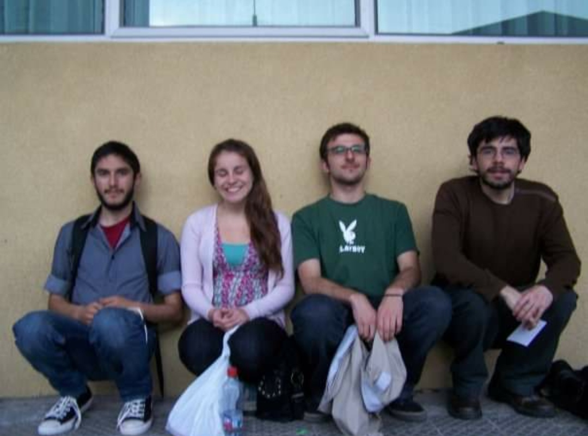

From the Ashes to Rebirth: Frank Fergus Turns Drama into Music After 15 Years of Silence
It’s been fifteen long years since Frank Fergus, the band that revolutionized the indie scene with their iconic album You Cannot Have That Much Butter, dissolved amidst rumors and controversy. What seemed like the definitive end was, in reality, the beginning of a long period of reflection and distance. Today, like a reborn phoenix, they return with a new work that, surprisingly, is inspired by that fateful culinary event. In this exclusive interview, Cano, Beñi, Jimmy, and Leonardo tell us how they managed to turn a dramatic misunderstanding into art.
Question 1: We all remember the controversial food poisoning that ended the band 15 years ago. What exactly happened that night at Cano’s house?
Cano: "It was crazy. We decided to celebrate the success of You Cannot Have That Much Butter with a party at my house, each of us cooking a special dish. What we didn’t know was that we had created a culinary toxic bomb. I prepared a pufferfish ceviche; Beñi brought chicken jerky that she had left drying in her garage; Jimmy decided to make mad cow carpaccio; and Leonardo, as always, was more experimental with a magic mushroom soufflé. We all ended up in the hospital, and no one wanted to take the blame."
Beñi: "To this day, I still say my jerky wasn’t the culprit!"
Jimmy: "Yeah, right, but it smelled dangerous as soon as you took it out of the tupperware."
Leonardo: "My soufflé was the least dangerous, it was just hallucinogenic!"
Question 2: How did this incident impact the group dynamics?
Cano: "It was devastating. We were all angry and distrustful. We thought the other was to blame, and that generated enormous tension. That episode was the catalyst for our breakup. We needed time to heal, not just physically, but emotionally."
Jimmy: "Something broke between us that night. It wasn’t just the poisoning, it was what came after: the silence, the veiled accusations… It was tough."
Question 3: Now, years later, you’re back with an album inspired by that event. What made you turn that trauma into music?
Cano: "With time, we started to see the humor in what had happened. We realized we had let a ridiculous situation destroy us. The album is a sort of catharsis for all of us, an exorcism of those demons that kept us apart for so long."
Beñi: "Each song is like an apology in the form of art. It’s our way of laughing at everything that separated us."
Leonardo: "It’s a very personal album, and at the same time, universal. It talks about the fragility of human relationships and how sometimes the most absurd things can have the biggest impact."
Question 4: How would you describe this new album compared to other artists?
Leonardo: "For me, it’s as if ABBA had made a concept album after a poisoned dinner. Think of a mix between 'Mamma Meatball' and 'Dancing Bean.' It’s pop, but with a… intoxicating twist."
Beñi: "I don’t know what you’re thinking, Leonardo. This album is pure rock. It’s like if AC/DC decided to make an entire album about dangerous food, something like 'Highway to Heartburn' or 'Back in the Snack.'"
Cano: "I see it more as if Madonna had made an epic comeback after a near-death experience. Something between 'Like a Surgeon' and 'Material Liver.'"
Jimmy: "Guys, I don’t know what world you live in, but this album has the vibe of Chico Trujillo on a bad ceviche trip. It’s like 'Gran Concha' but in a dark and psychedelic version."

Question 5: You Cannot Have That Much Butter was a massive success. Did you feel pressure creating this new album after so long?
Cano: "We definitely felt the pressure, but we also knew we didn’t want to repeat ourselves. We wanted to explore new territories, both lyrically and musically. This album is different, darker in some aspects, but also more liberating."
Question 6: What would you say to your fans who have waited so long for this return?
Jimmy: "Thank you for not forgetting us. This album is our way of saying we’re still here, wiser, more united, and with many more stories to tell."
Leonardo: "We hope you enjoy this album as much as we enjoyed creating it… this time, without any poisonings."

Tracklist of the New Album:
The new album is called "Leftovers from the Void." Here are the titles of the eight songs that make up this musical journey:
- Fugu Blues
- Charqui of Doom
- Mad Cow Tango
- Psychedelic Soufflé
- Eternal Heartburn
- Tupperware Tragedy
- Highway to Hypertension
- Dancing with Salmonella
Conclusion:
Frank Fergus is back, turning drama and discord into an album that promises to be as memorable as their story. The incident that nearly destroyed the band is now the spark that has brought them back to life. Their fans couldn’t be more excited, and the music world is ready to welcome them with open arms.
Frank Fergus - Mini Bio
Origin: Concepción, Chile
Formed: 2003
Musical Genres: Folk, Rock, Psychedelia, New Age, Zampoña
Members:
- Cano: Vocals, lover of dangerous ceviches
- Beñi: Drums, expert in garage jerky
- Jimmy: Guitar, bass, banjo; usual suspect in the kitchen
- Leonardo: Keyboard, theremin; creator of the mythical hallucinogenic soufflé
Fun Fact: The band insists that their recording sessions include a secret ritual with zampoñas to "invoke creative spirits."
Fun Fact: Frank Fergus once tried to play at a wedding but were kicked out after the bride thought their theremin was "calling aliens."